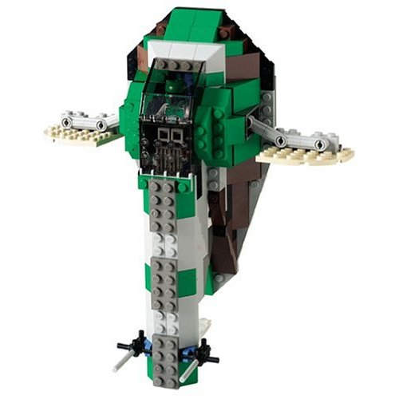

Todos los sets de la primera galaxia LEGO
Fichas de cada set LEGO Star Wars lanzado entre 1999 y 2002, con piezas, minifiguras, edad de la caja y la película de la que sale.
- Sets
- 26
- Piezas en total
- 6.110
- Minifiguras
- 81
7144
Slave I
Boba Fett lleva a Han Solo congelado en carbonita hasta Jabba. El primer Slave I de LEGO, del año 2000.

165 piezas
2 minifigs
7-12
Explora por era
LEGO empezó con la trilogía original y La amenaza fantasma en 1999, y sumó El ataque de los clones en 2002.
Sets destacados
Ver los 26 setsAño a año
-
1999
Primera licencia de la historia de LEGO. Llegan el X-Wing, el Snowspeeder y toda la línea de La amenaza fantasma.
Ver los sets de 1999 -
2000
Segunda ola: Slave I, A-Wing, B-Wing y el primer Halcón Milenario de LEGO.
Ver los sets de 2000 -
2001
El retorno del Jedi gana peso con la lanzadera imperial y el AT-ST pilotado por Chewbacca.
Ver los sets de 2001 -
2002
El ataque de los clones trae la cañonera de la República, el Slave I de Jango y el primer Yoda minifigura.
Ver los sets de 2002